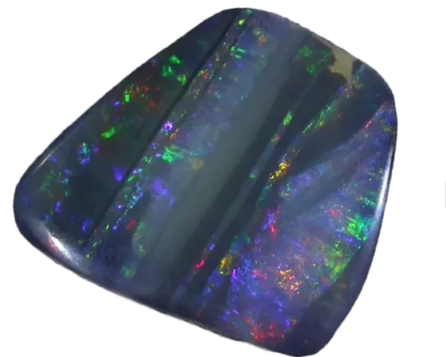
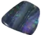

Mineral Grimoire

Honduras OpalAppearance
Honduras Opal appears as polished opal with dark matrix support, showing scintillating colors.
Origin
Found in Honduras. This is an ethically sourced mineral.
Attributes
Honduras Opal is a gentle stone ethically hand-mined out of seams of basalt, which is cut to form a matrix to support the stone and to reflect the scintillating colour. Gazing into a Honduras Opal helps you to see the spirit shining within your inner being. Mining this opal subsidizes the income of the local people and draws abundance to you.
Healing
Honduras Opal works primarily on spiritual and energetic levels, helping to reveal inner light and spiritual beauty.
Position
Hold for meditation and gazing. Place as appropriate for spiritual work.
Spellworking
Honduras Opal helps you see the spirit shining within. Use it for gazing, meditation, and revealing your inner light. As an ethically sourced stone, it also draws abundance. The matrix support reflects the scintillating colors beautifully for scrying work.